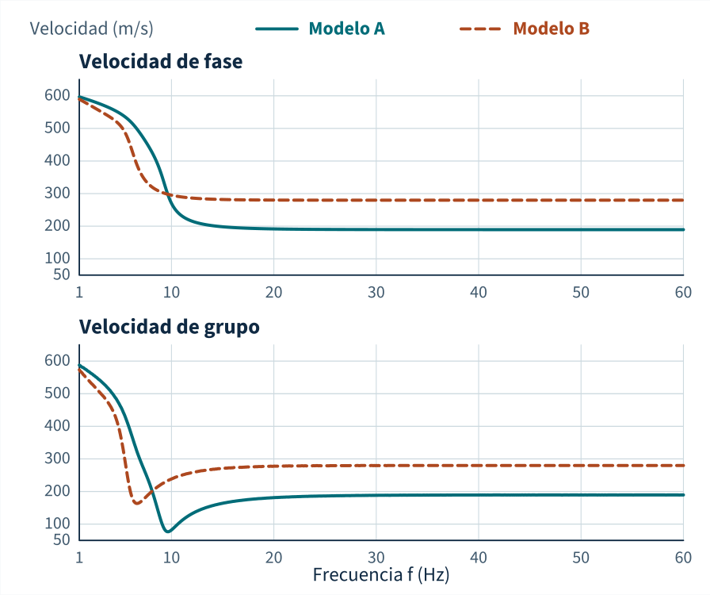

GRUPO 6 · TEMA 37 · ÓPTICA Y ONDAS · UTEC
ONDAS SÍSMICAS
SUPERFICIALES
Modos de Rayleigh, dispersión e inversión del subsuelo
Integrantes · [Nombres y apellidos]Docentes · Marco Cuyubamba y Eduardo Castillo
¿Cómo revela la dispersión de las ondas de Rayleigh la estructura mecánica del subsuelo?

Código y datos (disba)
01 · RAYLEIGH EN EL SEMIESPACIO
Ondas P, S y Rayleigh
P · De cuerpo, longitudinal: compresión y dilatación en la dirección de avance. Viaja a vp.
S · De cuerpo, transversal: cizalla perpendicular al avance, sin cambio de volumen. Viaja a vs < vp.
Rayleigh · Superficial: avanza por la superficie libre combinando P y SV, en elipses verticales que se atenúan en ~1 Λ (Λ: longitud de onda). Viaja a cR < vs [1].
{{FIG1}}
Figura 1. (a, b) Movimiento de partículas frente al avance. (c) Calculada con (4)–(5): elipses verticales (H/V = 0,64 en superficie); giro retrógrado arriba y prógrado bajo z ≈ 0,17 Λ, donde ux = 0.
Dos potenciales, un mismo modo
Navier (λ, μ: parámetros de Lamé; ρ: densidad):
\rho\,\partial_t^2\mathbf u=(\lambda+2\mu)\,\nabla(\nabla\!\cdot\mathbf u)-\mu\,\nabla\times\nabla\times\mathbf u \tag{1}
Con \mathbf u=\nabla\phi+\nabla\times(\psi\,\hat{\mathbf y}): \nabla\!\cdot\mathbf u=\nabla^2\phi (φ cambia el volumen: P) y \nabla\!\cdot\nabla\times=0 (ψ solo cizalla: SV). La ec. (1) se separa en
\begin{gathered}\partial_t^2\phi=v_p^2\nabla^2\phi,\qquad \partial_t^2\psi=v_s^2\nabla^2\psi\\ v_p=\sqrt{(\lambda+2\mu)/\rho},\qquad v_s=\sqrt{\mu/\rho}\end{gathered}\tag{2}
\begin{gathered}\phi=A\,e^{-qz}E,\quad \psi=B\,e^{-sz}E,\quad E\equiv e^{i(kx-\omega t)}\\ q^2=k^2-\omega^2/v_p^2,\qquad s^2=k^2-\omega^2/v_s^2\end{gathered}\tag{3}
Con u_x=\partial_x\phi-\partial_z\psi, u_z=\partial_z\phi+\partial_x\psi y B fijado por (7):
u_x=ikA\Big[e^{-qz}-\tfrac{2qs}{k^2+s^2}\,e^{-sz}\Big]E \tag{4}
u_z=-qA\Big[e^{-qz}-\tfrac{2k^2}{k^2+s^2}\,e^{-sz}\Big]E \tag{5}
El factor i desfasa ux 90° respecto de uz: la órbita es una elipse. Ambas componentes mezclan P y SV; ninguna sola anula las dos tracciones. ux = 0 en z=\ln\!\big[\tfrac{k^2+s^2}{2qs}\big]/(q-s) ≈ 0,17 Λ, donde se invierte el giro.
¿Por qué cR < vs < vp?
- vs < vp: v_p^2/v_s^2=2+\lambda/\mu. La estabilidad exige μ > 0 y K=\lambda+\tfrac23\mu>0, así que vp/vs > √(4/3). Aquí vale 2 y 3.
- cR < vs: si c > vs, s es imaginaria y SV radiaría energía hacia abajo. Solo con c < vs < vp son q, s > 0 en (3): la onda queda confinada.
- Lectura física: sin material encima, la superficie cede más y cR queda ~7 % bajo vs (raíz de la ec. 8).
02 · MODELO ELÁSTICO Y SIMULACIÓN
La condición para que exista Rayleigh
Superficie libre: el aire no ejerce tracción sobre el suelo, así que en z = 0 se anulan σxz y σzz. Con los potenciales:
\sigma_{zz}=\lambda\nabla^2\phi+2\mu\,(\partial_z^2\phi+\partial_x\partial_z\psi),\qquad \sigma_{xz}=\mu\,(2\partial_x\partial_z\phi+\partial_x^2\psi-\partial_z^2\psi)\tag{6}
Con (3) en z = 0 y \lambda(q^2-k^2)+2\mu q^2=\mu(k^2+s^2) queda un sistema homogéneo:
\underbrace{\begin{pmatrix}k^2+s^2 & -2iks\\ -2ikq & -(k^2+s^2)\end{pmatrix}}_{M}\begin{pmatrix}A\\ B\end{pmatrix}=\mathbf 0 \tag{7}
Solo admite A, B ≠ 0 si det M = 0, es decir (k^2+s^2)^2=4k^2qs. Dividiendo por k⁴:
(2-\xi^2)^2-4\sqrt{1-\xi^2}\sqrt{1-\beta\xi^2}=0,\qquad \xi=\tfrac{c_R}{v_s},\ \ \beta=\big(\tfrac{v_s}{v_p}\big)^2,\ \ c_R=\tfrac{\omega}{k}\tag{8}
El lado izquierdo pasa de ≈ −2(1−β)ξ² < 0 (ξ pequeño) a +1 (ξ = 1): hay una raíz física en 0 < ξ < 1. Semiespacio: ξ = 0,9325 → cR = 606,1 m/s, igual que la fase y el grupo del solver (control homogéneo). (8) no depende de ω: ω = cRk y vg = cR, sin dispersión.
Dos perfiles de suelo, dos curvas
| Medio | h (m) | vp (m/s) | vs (m/s) | ρ (kg/m³) |
|---|
| Capa A | 10 | 600 | 200 | 1800 |
| Capa B | 20 | 600 | 300 | 1800 |
| Semiespacio | ∞ | 1300 | 650 | 2100 |
Figura 2. Perfiles sintéticos de Vs(z): interfaz capa–semiespacio.
Dunkin · disba 0.7.0 [4] · modo 0 · 1–60 Hz. Continuidad de desplazamiento y tracción en la interfaz, tracción nula en la superficie y decaimiento en el semiespacio.

Figura 3. Dispersión del modo fundamental de Rayleigh. En la transición, vg cae por debajo de cR. Para A a 10 Hz: 82,0 frente a 270,4 m/s.
03 · INTERPRETACIÓN E INVERSIÓN
Velocidad de fase y de grupo
La fase cR = ω/k sigue un punto de fase constante. El grupo vg = dω/dk describe la envolvente de un paquete de banda estrecha.
k = 2πf/cR
vg = cR / [1 − (f/cR) · dcR/df]
Entre 1,5 y 59,5 Hz, la discrepancia máxima con el solver fue 1,0 m/s. Al refinar de 0,10 a 0,05 Hz, la estimación de vg cambió hasta 0,7 m/s. Las cuatro ramas se mantuvieron continuas.
Qué cambia con la frecuencia
1 Hz · cR A/B = 596,7 / 589,4 m/s.
10 Hz · cR A/B = 270,4 / 295,1 m/s.
60 Hz · cR A/B = 189,5 / 279,8 m/s.
En A, Λ = cR/f pasa de 596,7 m a 1 Hz a 3,16 m a 60 Hz. La capa de 10 m pasa de ocupar una fracción pequeña de Λ a abarcar varias longitudes de onda.
Así disminuye la influencia relativa del semiespacio. La sensibilidad se distribuye en profundidad y depende del perfil y del modo [3].
Aplicación con MASW
Fuente y arreglo de geófonos
▾
Imagen frecuencia–velocidad
▾
Selección del modo Rayleigh
▾
Ajuste de curvas
▾
Perfil de velocidad Vs(z)
Figura 4. Flujo conceptual MASW para estimar Vs(z) a partir de registros de campo. Las curvas de la Fig. 3 proceden de modelos sintéticos [2, 3].
El problema directo predice curvas a partir de un perfil. El inverso ajusta un modelo de capas a una curva medida. Varios perfiles pueden explicar una banda limitada [3].
Efectos de h y de vs
Con vs fijo en 200 m/s, duplicar h desplaza el mínimo de vg de 9,7 a 4,8 Hz.
Con h fijo en 10 m, subir vs de 200 a 300 m/s eleva cR a 60 Hz de 189,5 a 279,8 m/s.
SENSIBILIDAD · CAMBIOS AISLADOS DESDE A
cR a 10 Hz (m/s) · A: 270,4. Solo h a 20 m: 191,7. Solo vs a 300 m/s: 508,9.